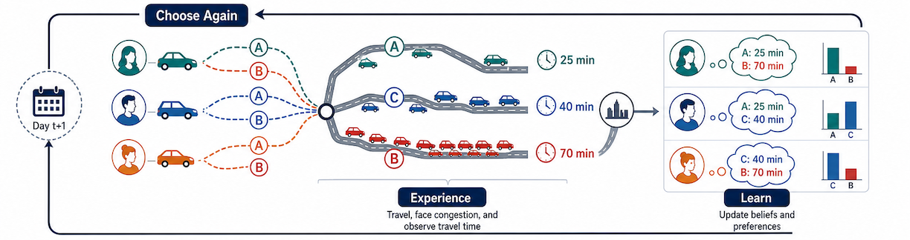
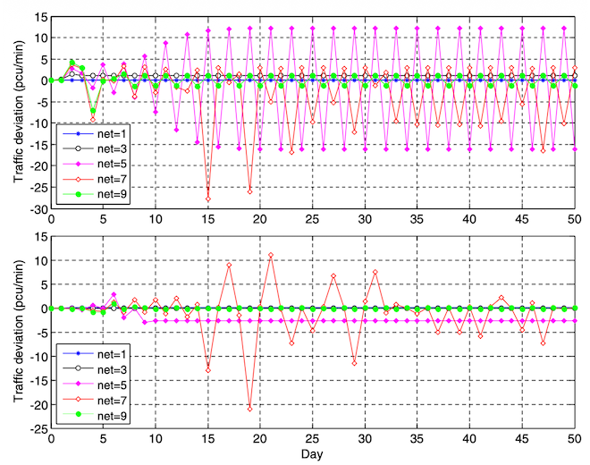
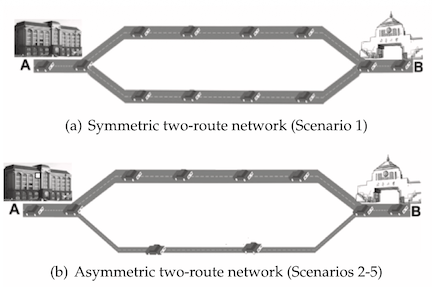
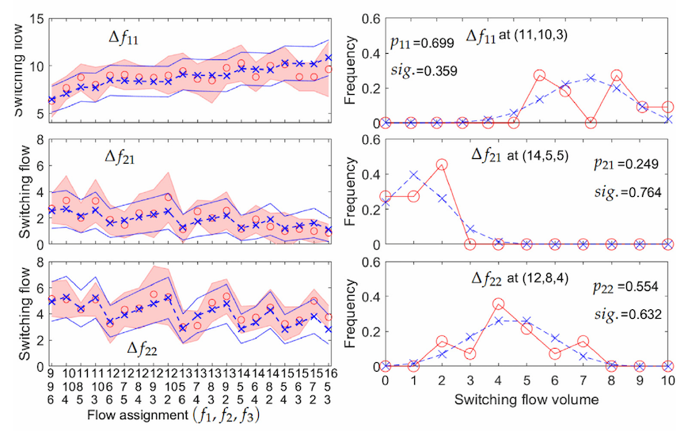
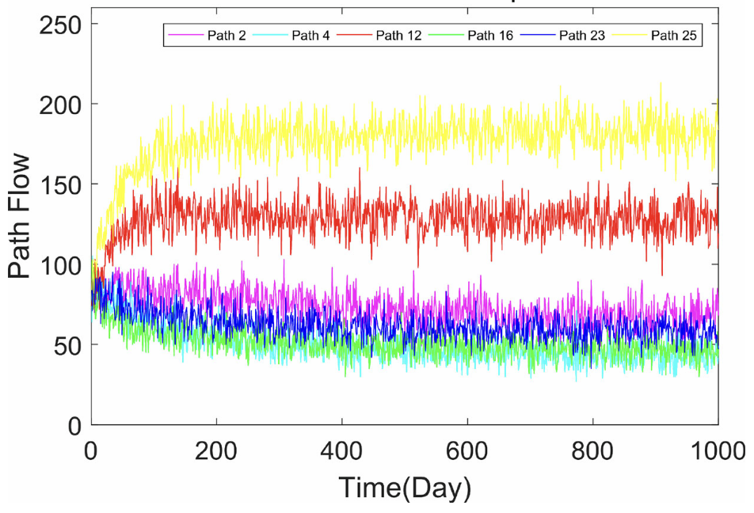
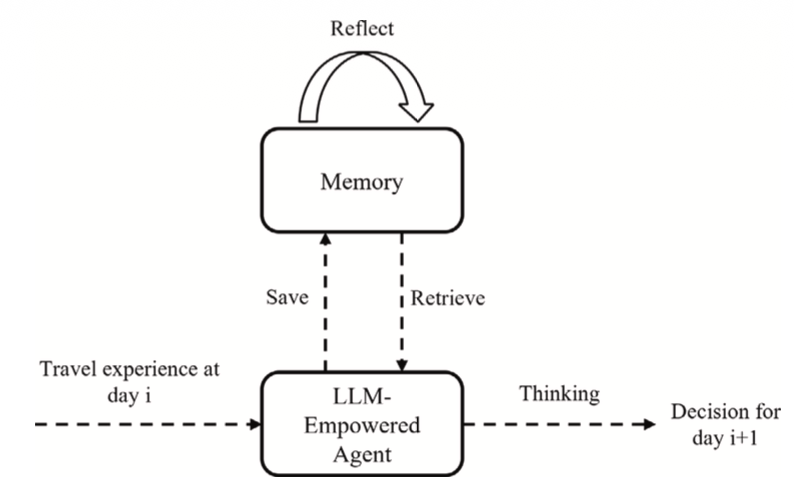

Brain-Driving: Driving Simulator and EEG
Overview
Day-to-day route choice describes how travelers revise their routes from one day to the next based on experience, expectations, traffic information, and the choices of others. Their decisions change traffic flows and travel times, which in turn influence future choices. Studying this process helps us understand how traffic evolves and responds to disruptions, information, and transport policies, providing a foundation for traffic management and network planning.

Our studies trace a progression, i.e., behavioral theory[1] -> controlled human experiments[2][3] -> agent-based and LLM-powered simulation[4][5].
- Behavioral Theory: On the theoretical side, we formulated day-to-day rerouting processes under both absolute and relative bounded rationality, showing that the two mechanisms can produce similar aggregate convergence while generating fundamentally different route-switching dynamics[1].
- Controlled Experiments: We then conducted a multi-scenario laboratory program in which 312 participants repeatedly chose among congestible routes. The experiments revealed route-dependent inertia and preference, which we incorporated into an analyzable dynamic model[2]; building on the same experimental evidence, we developed a stochastic-process model that reproduces the persistent random oscillations observed in route switching and flow evolution[3].
- LLM-Powered Simulation: Moving to agent-based simulation, we proposed an analyzable framework that accommodates heterogeneous individual learning rules and learning rates while retaining stable aggregate properties[4]. Most recently, we constructed LLMTraveler, an LLM-based traveler agent equipped with memory and personality-aware decision-making, and evaluated it through day-to-day congestion-game experiments: first against human laboratory behavior in a single-origin–destination setting, and then on a multi-origin–destination network against conventional multinomial-logit and reinforcement-learning agents[5].
Publications

[1]Day-to-Day Rerouting Modeling and Analysis with Absolute and Relative Bounded Rationalities

[2]Investigating Day-to-Day Route Choices Based on Multi-Scenario Laboratory Experiments. Part I: Route-Dependent Attraction and Its Modeling

[3]Investigating Day-to-Day Route Choices Based on Multi-Scenario Laboratory Experiments. Part II: A Route-Dependent Attraction-Based Stochastic Process Model

[4]An Analyzable Agent-Based Framework for Modeling Day-to-Day Route Choice

[5]Agentic Large Language Models for Day-to-Day Route Choices